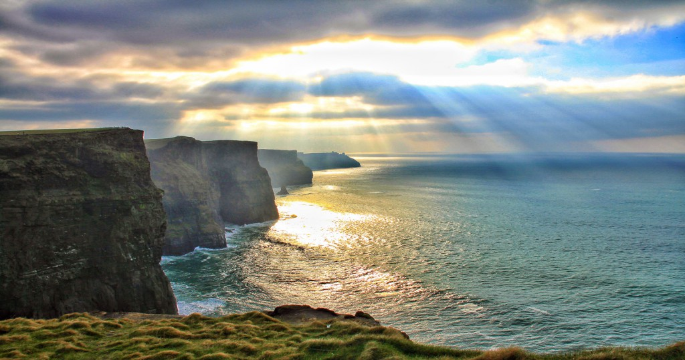

The Cliffs of Moher
"A look back in time. A view of forever."
The cliffs take their name from an old promontory fort called Mothar or Moher, which once stood on Hag's Head, the southernmost point of the cliffs, now the site of Moher Tower. he cliffs consist mainly of beds of Namurian shale and sandstone, with the oldest rocks being found at the bottom of the cliffs. It is possible to see 300-million-year-old river channels cutting through, forming unconformities at the base of the cliffs.
There are an estimated 30,000 birds living on the cliffs, representing more than 20 species. These include Atlantic puffins, which live in large colonies at isolated parts of the cliffs and on the small Goat Island, and razorbills. The site is an Important Bird Area.
The cliffs rank amongst the most visited tourist sites in Ireland and receive approximately one million visitors a year. The closest settlements are Liscannor (6 km south) and Doolin (7 km north).
The Cliffs of Moher - Ticket Prices
From the cliffs, and from atop the tower, visitors can see the Aran Islands in Galway Bay, the Maumturks and Twelve Pins mountain ranges to the north in County Galway, and Loop Head to the south.

| Adult Ticket(s) | €6.00 |
| Child u16 Ticket(s) | FREE |
| Senior/Student/Disabled Ticket(s) | €4.50 |
The Cliffs of Moher - Facts
1. It is the site of ancient Irish legends
Local Irish legend tells of how an old hag called Mal. She fell in love with the Irish hero Cú Chulainn and chased him all over Ireland. Cú Chulainn did not return her feelings. He finally ended up at Loop Head in Co.Clare, seemingly cornered by Mal. He saw an exit route and made his escape by hopping across sea stacks towards the Cliffs of Moher, using them like stepping-stones. Mal, not so nimble as he, went following after him but lost her footing and was dashed to pieces against the cliff. They say the sea turned red where she fell, all the way to the Cliffs.
2. The cliffs boast celebrity status
As the dramatic backdrop for many movies, TV series, music videos and adverts, The Cliffs of Moher have become a recognisable landmark on the big screen. Some of the bigger and more recent movies filmed at the Cliffs of Moher include Harry Potter and the Half- Blood Prince, The Princess Bride, The Yank, Into the West and The Mackintosh Man.
3. The cliffs are a nature spotting haven
It is a breeding site for over 30,000 seabirds and was classified as a Refuge for Fauna in 1988. The area is home to large numbers of Guillemot and Razorbills, as well as Atlantic Puffins, Peregrine Falcon, Kittiwake and Fulmar. Some endangered bird species like Choughs also call this place home.